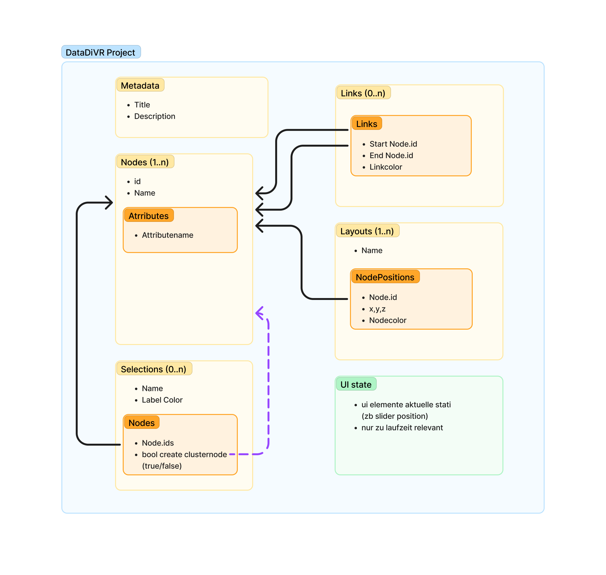

Project Functionality
Overview
Functionality for managing a DataDiVR project, including reading and writing project files in both JSON and binary formats.
Data Structure

Core Components
Project
The root model representing a DataDiVR project. Contains all data necessary to represent and visualize a network of nodes, their connections, and various layouts.
Key Attributes:
name: Project display nameattributes: Optional key-value pairs for project metadatanodes_data: Efficient storage for node information (IDs, names, attributes)links_data: Storage for node connectionslayouts_data: Dictionary of layout configurationsselections: Optional list of node selection groups
Data Storage Classes
NodeData
Efficient storage for large node datasets:
ids: Array of node IDs (numpy int32)names: Parallel array of namesattributes: Sparse dictionary of attributes keyed by node ID
LayoutData
Storage for layout positions:
node_ids: Array of node IDs (numpy int32)positions: Array of 3D positions (numpy float32)colors: Array of RGBA colors (numpy uint8)
LinkData
Storage for node connections:
start_ids: Array of source IDs (numpy int32)end_ids: Array of target IDs (numpy int32)colors: Array of RGBA colors (numpy uint8)
File Formats
The project supports two file formats:
JSON Format
- Human-readable format
- Uses optimized orjson serialization
- Suitable for very small projects
Binary Format
- Compressed zip file containing:
metadata.json: Project metadata and non-array dataarrays/*.npy: Binary numpy arrays for large datasets- Optimized for large projects with significant numerical data
- Uses numpy's native format for efficient storage of arrays
- much smaller file size than JSON
- faster to load (10x+)
Color Representation
Colors are represented using RGBA format:
- Type:
RGBAColor = tuple[int, int, int, int] - Values: Four integers representing Red, Green, Blue, and Alpha channels
datadivr.project.model
Attributes
RGBAColor = tuple[int, int, int, int]
module-attribute
Type alias for RGBA colors represented as a tuple of 4 integers (r,g,b,a).
Classes
LayoutData
dataclass
Efficient storage for layout positions
Source code in datadivr/project/model.py
LayoutNotFoundError
LinkData
dataclass
Efficient storage for links
Source code in datadivr/project/model.py
NodeData
dataclass
Efficient storage for large node datasets using parallel numpy arrays
Source code in datadivr/project/model.py
Attributes
attribute_names: set[str]
property
Get all available attribute names
Functions
add_attribute(name, values, dtype)
Add a new attribute array of specified type
Source code in datadivr/project/model.py
get_attribute(name)
Get attribute array by name
Source code in datadivr/project/model.py
get_attributes_by_index(index)
Get all attributes for a node by its index.
Source code in datadivr/project/model.py
Project
Bases: BaseModel
Root model representing a DataDiVR project.
This model contains all data necessary to represent and visualize a network of nodes, their connections, and various layouts using efficient data structures for large datasets.
Attributes:
| Name | Type | Description |
|---|---|---|
name |
str
|
Project display name |
attributes |
dict[str, str]
|
Optional key-value pairs for project metadata |
nodes_data |
NodeData | None
|
Efficient storage for node data (ids, names, and attributes) |
links_data |
LinkData | None
|
Efficient storage for link data (start_ids, end_ids, and colors) |
layouts_data |
dict[str, LayoutData]
|
Dictionary of layout configurations with efficient array storage |
selections |
list[Selection] | None
|
Optional list of node Selection groups |
Example
Source code in datadivr/project/model.py
125 126 127 128 129 130 131 132 133 134 135 136 137 138 139 140 141 142 143 144 145 146 147 148 149 150 151 152 153 154 155 156 157 158 159 160 161 162 163 164 165 166 167 168 169 170 171 172 173 174 175 176 177 178 179 180 181 182 183 184 185 186 187 188 189 190 191 192 193 194 195 196 197 198 199 200 201 202 203 204 205 206 207 208 209 210 211 212 213 214 215 216 217 218 219 220 221 222 223 224 225 226 227 228 229 230 231 232 233 234 235 236 237 238 239 240 241 242 243 244 245 246 247 248 249 250 251 252 253 254 255 256 257 258 259 260 261 262 263 264 265 266 267 268 269 270 271 272 273 274 275 276 277 278 279 280 281 282 283 284 285 286 287 288 289 290 291 292 293 294 295 296 297 298 299 300 301 302 303 304 305 306 307 308 309 310 311 312 313 314 315 316 317 318 319 320 321 322 323 324 325 326 327 328 329 330 331 332 333 334 335 336 337 338 339 340 341 342 343 344 345 346 347 348 349 350 351 352 353 354 355 356 357 358 359 360 361 362 363 364 365 366 367 368 369 370 371 372 373 374 375 376 377 378 379 380 381 382 383 384 385 386 387 388 389 390 391 392 393 394 395 396 397 398 399 400 401 402 403 404 405 406 407 408 409 410 411 412 413 414 415 416 417 418 419 420 421 422 423 424 425 426 427 428 429 430 431 432 433 434 435 436 437 438 439 440 441 442 443 444 445 446 447 448 449 450 451 452 453 454 455 456 457 458 459 460 461 462 463 464 465 466 467 468 469 470 471 472 473 474 475 476 477 478 479 480 481 482 483 484 485 486 487 488 489 490 491 492 493 494 495 496 497 498 499 500 501 502 503 504 505 506 507 508 509 510 511 512 513 514 515 516 517 518 519 520 521 522 523 524 525 526 527 528 529 530 531 532 533 534 535 536 537 538 539 540 541 542 543 544 545 546 547 548 549 550 551 552 553 554 555 556 557 558 559 560 | |
Functions
add_layout_bulk(name, node_ids, positions, colors)
Efficiently add layout data
Source code in datadivr/project/model.py
add_links_bulk(start_ids, end_ids, colors)
Efficiently add multiple links at once
Source code in datadivr/project/model.py
add_nodes_bulk(ids, attributes)
Efficiently add multiple nodes at once with attribute arrays
Parameters:
| Name | Type | Description | Default |
|---|---|---|---|
ids
|
NDArray[int32]
|
Array of node IDs |
required |
attributes
|
dict[str, NDArray]
|
Dictionary mapping attribute names to numpy arrays of values |
required |
Source code in datadivr/project/model.py
create_all_assets(output_dir='static/projects/')
Create all project assets including textures, JSON files, and project summary.
Source code in datadivr/project/model.py
create_json_files(output_dir='static/projects/')
Create JSON files for nodes and links.
Source code in datadivr/project/model.py
create_project_summary(output_dir='static/projects/')
Create a project summary JSON file.
Source code in datadivr/project/model.py
create_textures(output_dir='static/projects/')
Create textures for the project.
Source code in datadivr/project/model.py
get_layout_colors(layout_name='default')
Get node colors for a specific layout
Source code in datadivr/project/model.py
get_layout_positions(layout_name='default')
Get node positions for a specific layout
Source code in datadivr/project/model.py
load_from_binary_file(file_path)
classmethod
Load a project from a binary format file.
Source code in datadivr/project/model.py
load_from_json_file(file_path)
classmethod
Load a project from a JSON file.
Parameters:
| Name | Type | Description | Default |
|---|---|---|---|
file_path
|
Path | str
|
Path to the JSON file |
required |
Returns:
| Name | Type | Description |
|---|---|---|
Project |
Project
|
Loaded and validated Project instance |
Raises:
| Type | Description |
|---|---|
ValidationError
|
If the JSON data doesn't match the expected schema |
OSError
|
If there are file access issues |
Source code in datadivr/project/model.py
model_dump(*, mode='python', include=None, exclude=None, by_alias=False, exclude_unset=False, exclude_defaults=False, exclude_none=False, round_trip=False, warnings=True, serialize_as_any=False, context=None)
Custom serialization optimized for speed and memory efficiency
Source code in datadivr/project/model.py
model_validate(obj, *, strict=None, from_attributes=None, context=None)
classmethod
Custom deserialization from efficient storage
Source code in datadivr/project/model.py
save_to_binary_file(file_path)
Save the project using numpy binary format for large arrays.
Source code in datadivr/project/model.py
save_to_json_file(file_path)
Save the project to a JSON file with optimized performance.
Source code in datadivr/project/model.py
Functions
options: show_root_heading: true heading_level: 2 members: [Project, Node, Link, Layout, LayoutNodePosition, Selection] show_source: false